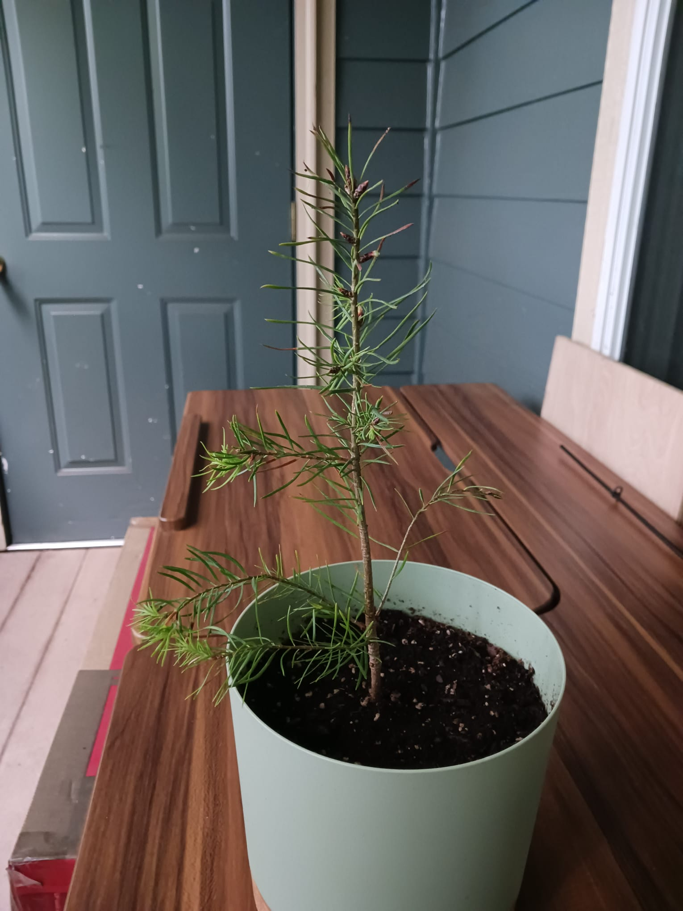

A few years back I started playing Minecraft with my wife. It was fun, and we both enjoyed it. As I got deeper in my schoolwork
I had less and less time to play games, so I quit paying for my subscription. It was not much for it. I just didn’t have the time.
About a year after quitting, I learned that I could make my own server and not have to pay anyone for it. So, I did just that now
whenever we want we can hope on and play. I have been working on adding mods to it as a fun little side project, but I have not
successfully done it yet. At some point though I will have it so it will run with mods. I decided to add this little thing that
shows when my server for my game is on.
Checking server status...
At some point I want to make a little sensor that shows how much water is in the soil of my tree that I own. I have not gotten
around to it but I will put it here when done.

A project that has come to my mind in the past few months is that I want to make my own streaming server. I own a lot of shows
and I think the idea of having them all on a harddrive that I can access when I want would be a fun thing to work on.
It also helps they are shows that I like to watch.
Someone like the video server I have many D&D books that I want to make digital copies of so I can do the same thing with them
The last project and the one that means the most to me is I would like to make a video game on my own from scratch. I have
played games all my life and for years it has been a dream to make one.